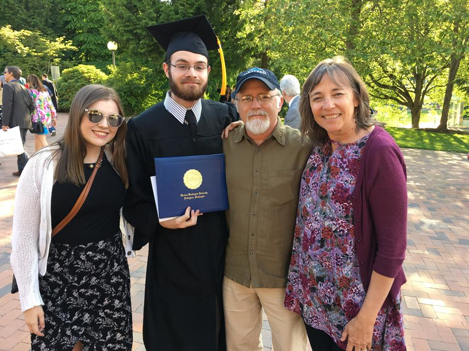

About Me
I received my Bachelor of Science in Physics with a minor in Astronomy at Western Washington University, where I was awarded both the Western Undergraduate Exchange Scholarship and the Dr. James and Joann Albers Scholarship.
During my undergrade career at WWU, I worked with Dr. James R. A. Davenport as an undergraduate researcher studyingh age-activity-rotation studies of widely separated binary stars and modelling quasi-periodic pulsations in stellar flares using Gaussian processes.
I originally hail from the icy northern clime of Fairbanks, AK, but currently live in the slightly less icy Bellingham, WA.
